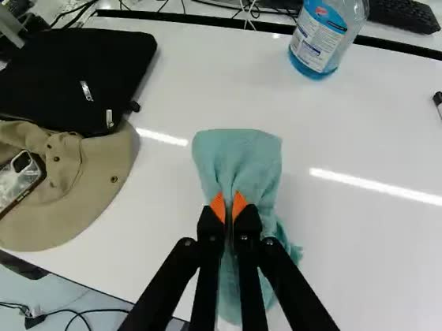
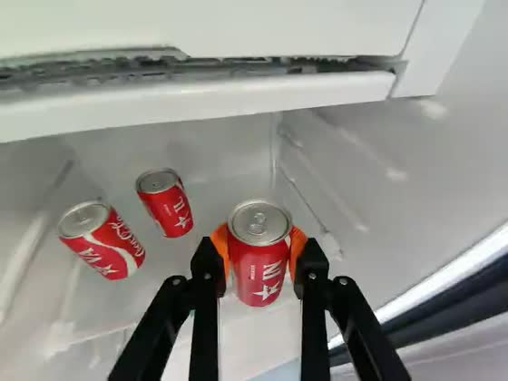
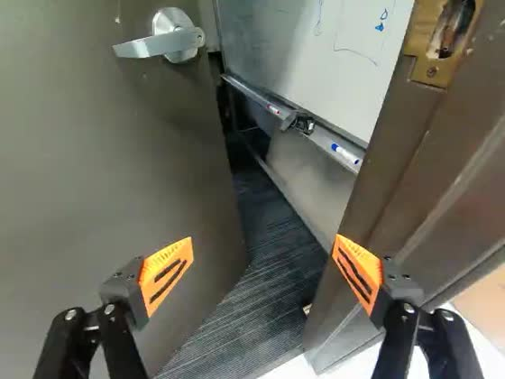
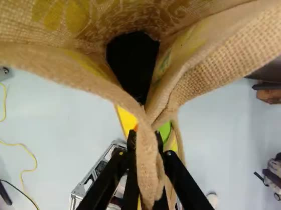
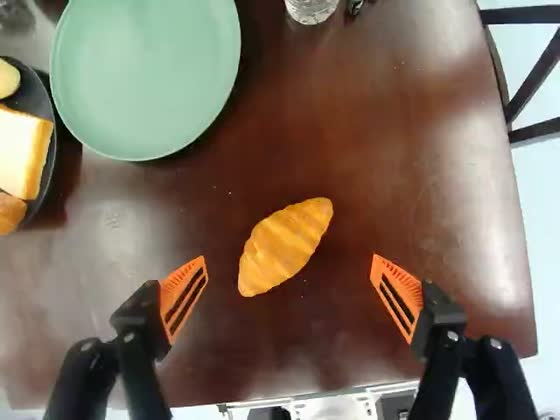
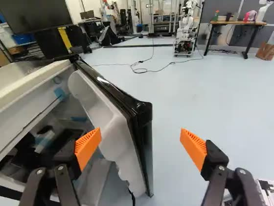
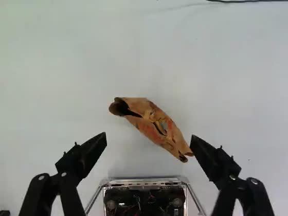
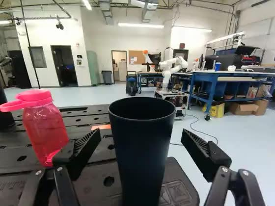
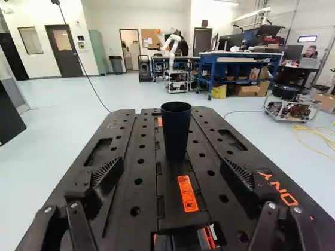
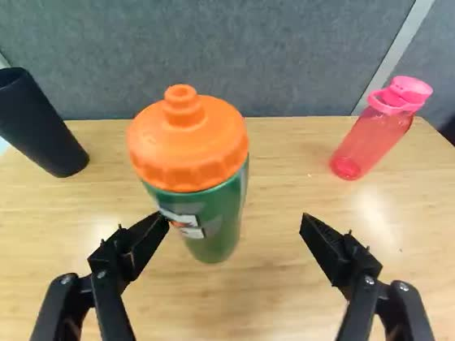

Load one episode
Start with the croissant dataset: 98 demonstrations of moving a croissant onto a plate. Download its metadata and robot data first, about 34 MB. Adding all the videos brings the download to about 2.5 GB. No Hugging Face token is needed.
1. Download the data
Run these commands in a terminal, inside your Python environment:
python -m pip install huggingface_hub pyarrow
hf download L5vel/base4-plate-croissant-eef-merged-v30 \
--repo-type dataset \
--include 'meta/**' --include 'data/**' \
--local-dir ./plate-croissant2. Read episode 47
Save this as inspect_episode.py beside the downloaded
plate-croissant/ directory, then run python inspect_episode.py.
It reads one episode’s robot data without decoding video.
import json
from pathlib import Path
import pyarrow.dataset as ds
root = Path("plate-croissant")
info = json.loads((root / "meta/info.json").read_text())
episode_id = 47
frames = ds.dataset(root / "data", format="parquet").to_table(
columns=["frame_index", "timestamp", "observation.state", "language_persistent"],
filter=ds.field("episode_index") == episode_id,
).sort_by([("frame_index", "ascending")])
print("Episodes:", info["total_episodes"])
print("Declared rate:", info["fps"], "Hz")
print("State dimensions:", len(frames["observation.state"][0].as_py()))For this release, the output is:
Episodes: 98
Declared rate: 50 Hz
State dimensions: 10Continue with the annotation example below to print this episode’s subtask timeline.
Add video with LeRobot
To load images alongside robot state, use a LeRobot installation with dataset support and a working video decoder. Install it in your Python 3.12 environment using this terminal command:
python -m pip install 'lerobot[dataset]'Run this Python example separately:
from lerobot.datasets.lerobot_dataset import LeRobotDataset
dataset = LeRobotDataset(
"L5vel/base4-plate-croissant-eef-merged-v30",
episodes=[47],
)
sample = dataset[0] # First frame of the selected episode.
print(sample["observation.state"].shape)
print(sample["observation.images.wrist"].shape)
The state has 10 values; the RGB wrist image has shape
(3, 480, 640). LeRobot uses its own download cache for this
example. Selecting an episode can still fetch shared video or data shards
that contain other episodes. Leave room for downloads and video decoding.
Choose a dataset
All ten datasets use LeRobot v3.0 and Apache-2.0. Each has three camera views and robot state and action data. Pick a shorter task to inspect a grasp, or a longer sequence to work with several steps of manipulation and movement. The links below open the full repositories on Hugging Face.
| Task and dataset link | Episodes | Typical length | Full download |
|---|---|---|---|
| grab a drink from the fridge | 250 | 78 s | 18.6 GB |
| clean the table with the green towel | 199 | 52 s | 9.6 GB |
| open the door and move inside | 200 | 51 s | 6.8 GB |
| pick up the bag on the ground and place it on the table | 200 | 48 s | 9.3 GB |
| move the croissant to the empty plate | 98 | 32 s | 2.5 GB |
| open the fridge door | 100 | 24 s | 2.2 GB |
| pick up the grocery bag from the ground | 100 | 18 s | 1.5 GB |
| place the blue cup on the table (+1 more) | 150 | 11 s | 1.6 GB |
| pick up the blue cup from the table | 102 | 15 s | 1.4 GB |
| pick up the green bottle from the table | 100 | 14 s | 1.2 GB |
Typical length is the median episode duration. Sizes include videos and are rounded. Across the collection: 1,499 episodes, 17.2 hours and 54.9 GB. The detailed table also includes frame counts, duration ranges and annotation sources.
Find the files and fields
These are LeRobot v3.0 datasets. Episode data is packed into shards; one Parquet or video file can contain more than one episode.
data/chunk-*/file-*.parquet Robot states, actions and language
videos/<camera>/chunk-*/file-*.mp4 Camera recordings
meta/info.json Format, features and dataset counts
meta/tasks.parquet Task text, looked up by task_index
meta/episodes/ Episode metadata and success flags
meta/eef_kinematics.json End-effector representation metadata| Field | Shape / type | What it contains |
|---|---|---|
observation.stateaction | 10 values each | Six arm joints, gripper, and base x, y, yaw. |
observation.eef_stateaction.eef | 13 values each | Cartesian position, two orientation axes, gripper and base pose. This is the -eef-merged- representation in repository names. |
observation.base_pose | 3 values | Base x, y and yaw. |
observation.images.leftobservation.images.rightobservation.images.wrist | 640×480 RGB | Two scene cameras and one wrist camera. H.264 video, without audio; all streams declare 50 Hz. |
language_persistent | Language messages | The episode’s complete persistent annotation list, repeated on every frame. Filter by style and timestamp to recover subtasks. |
language_events | Language messages | Present but empty in this release. There are no interjection, speech or VQA events to load. |
task_index | Task lookup | Identifies the canonical task text. Read the per-frame value; one dataset contains two task strings. |
The common 50 Hz rate describes the stored streams. Physical synchronization error between cameras and other sensors has not been measured.
Metadata differences to handle in a loader
- Nine repositories list only seven motor names for the 10-value state and action vectors.
base4-plate-croissantnames all ten; the final three values are base x, y and yaw. task_index_high_levelexists only inbase4-clean-table,base4-mobile-door,u850-bag-place,u850-fridge-drinkandbase4-plate-croissant. Make this field optional.- The per-frame
correctionflag is false everywhere. It supplies no marked intervention segments; it does not independently establish that no interventions occurred.
Choose a camera view
These frames show episode 47 of the croissant dataset at the same recorded timestamp, 15.8 seconds. Use the scene views for the arm’s approach and the wrist view for a closer look at the gripper and target.
-

observation.images.left640×480, declared 50 Hz
-

observation.images.right640×480, declared 50 Hz
-

observation.images.wrist640×480, declared 50 Hz
Read subtask annotations
Read the annotation list once per episode. Every frame stores
the same complete list in language_persistent. Select messages
with style="subtask", then sort them by timestamp.
Append this code to inspect_episode.py:
import ast
messages = frames["language_persistent"][0].as_py() or []
messages = [ast.literal_eval(m) if isinstance(m, str) else m for m in messages]
subtasks = sorted(
(m["timestamp"], m["content"])
for m in messages if m.get("style") == "subtask"
)
for start, label in subtasks:
print(f"{start:6.2f} s {label}")
if not subtasks:
print("This episode has no subtask annotations.")
You will get one line per subtask: its start time in seconds and its label.
Depending on the reader, a message can arrive as a decoded object or a
Python-literal string; the example handles both. Read another episode by
changing episode_id in the first example.
A subtask lasts until the next subtask’s start; the last one lasts until
the episode ends. For example, a step starting at 3.94 seconds followed by a
step at 9.00 seconds covers [3.94, 9.00). Do not merge repeated
labels: two wiping passes are two separate spans.
Stored message example and the blog’s video source
This message comes from table-cleaning episode 104, shown in the blog. It illustrates the same format used in the croissant walkthrough.
{
"role": "assistant",
"content": "move the green towel towards the mess",
"style": "subtask",
"timestamp": 3.940000057220459,
"camera": null,
"tool_calls": null
}The cleaning episode uses imported annotations. The records do not identify their original author or establish human verification. The embedded web clip is re-encoded at 25 fps from a dataset stream declared at 50 Hz.
Check annotation sources
The collection combines existing annotations with model-generated annotations. Importing records where labels entered the pipeline; it does not identify who originally wrote or reviewed them.
| Source | Episodes | Subtask spans | How to interpret it |
|---|---|---|---|
| Imported, with subtasks | 895 | 5,201 | Existing labels were retained; start times were snapped to frames and spans joined to cover the episode. |
| Generated | 602 | 1,681 | Run logs name Qwen3.8-27B, but do not pin an immutable model revision. |
| Imported, empty track | 2 | 0 | One episode each in table cleaning and retrieving a drink from the fridge. |
Independent annotation agreement and downstream training gains have not been measured for this release. The timing study evaluates fixed-label predictions against source references; it does not measure the quality of the generated labels published here.
Annotation source for each dataset
| Dataset | Subtask source |
|---|---|
u850-fridge-drink | Import route (249 with spans; 1 empty) |
base4-clean-table | Import route (198 with spans; 1 empty) |
base4-mobile-door | Mixed (150 import route; 50 Qwen generation route) |
u850-bag-place | Import route (200 with spans) |
base4-plate-croissant | Import route (98 with spans) |
u850-fridge-open | Qwen generation route (100 with spans) |
base4-mobile-bag | Qwen generation route (100 with spans) |
base4-mobile-place-cup | Qwen generation route (150 with spans) |
base4-mobile-cup | Qwen generation route (102 with spans) |
base4-mobile-bottle | Qwen generation route (100 with spans) |
Task text, paraphrases, plans and memory
- Canonical task strings come from the source task metadata.
- Task paraphrases and 5,385 memory rows come from text-only model calls. The component logs name Qwen3.8-27B without a pinned revision.
- The pipeline targeted ten alternative task descriptions. 1,482 episodes retain ten and 17 retain nine, in addition to the canonical task.
- Plans are constructed from the published subtask sequence. They are derived annotations, rather than an independent record of the task.
How the release was checked
All 1,499 persistent annotation lists in the ten merged releases match their
corresponding outputs across 32 component runs. Import logs show that spans
were read from meta/lerobot_annotations.json without a subtask
generation call. Label sequences were preserved.
During import, 4,136 of 5,201 start times moved: 4,135 by no more than one 50 Hz frame and one by 0.563 seconds. Ends were rebuilt from the next start and the episode end. These checks establish the publishing process; the records contain no original-author or human-verification field.
Prepare your experiment
- Split by episode. The published datasets define one
trainsplit containing every episode. Create your own training and evaluation split before sampling frames. - Choose whether to include unsuccessful episodes. Read the
successflag inmeta/episodes/; five of the 1,499 episodes are marked unsuccessful. - Check labels against video. Wording and timing conventions vary. In
base4-mobile-cup, episode 82’s task says “blue cup” while a subtask says “black cup”. - Handle missing subtasks. Two episodes have empty tracks. The parsing example above handles this case.
- Read task text by index.
base4-mobile-place-cupcontains two canonical task strings. The other nine datasets contain one each. - Use repository metadata for the schema. The snapshot’s dataset cards contain boilerplate and some visualization badges point to an older namespace. Use the repository links on this page and inspect
meta/.
These recordings come from a working laboratory, with the teleoperator and colleagues sometimes visible. When inspecting or sharing clips, keep that recording context in mind.
Explore collection statistics
Open the sections below for the complete counts and charts. They describe the 9 September 2026 snapshot; recompute them if the repositories change.
Full dataset statistics and recording lengths
| Dataset | Task string | Episodes | Frames | Duration | Median episode | Range | Subtasks/ep | Subtask source | Size |
|---|---|---|---|---|---|---|---|---|---|
| u850-fridge-drink-eef-merged-v30 | grab a drink from the fridge | 250 | 968,523 | 323 min | 78 s | 41–105 s | 5.8 | Import route (249 with spans; 1 empty) | 18.6 GB |
| base4-clean-table-eef-merged-v30 | clean the table with the green towel | 199 | 534,608 | 178 min | 52 s | 27–236 s | 6.2 | Import route (198 with spans; 1 empty) | 9.6 GB |
| base4-mobile-door-eef-merged-v30 | open the door and move inside | 200 | 506,473 | 169 min | 51 s | 40–68 s | 5.8 | Mixed (150 import route; 50 Qwen generation route) | 6.8 GB |
| u850-bag-place-eef-merged-v30 | pick up the bag on the ground and place it on the table | 200 | 477,058 | 159 min | 48 s | 38–58 s | 6.0 | Import route (200 with spans) | 9.3 GB |
| base4-plate-croissant-eef-merged-v30 | move the croissant to the empty plate | 98 | 155,517 | 52 min | 32 s | 23–51 s | 4.3 | Import route (98 with spans) | 2.5 GB |
| u850-fridge-open-eef-merged-v30 | open the fridge door | 100 | 118,990 | 40 min | 24 s | 16–32 s | 3.6 | Qwen generation route (100 with spans) | 2.2 GB |
| base4-mobile-bag-eef-merged-v30 | pick up the grocery bag from the ground | 100 | 92,672 | 31 min | 18 s | 12–27 s | 2.6 | Qwen generation route (100 with spans) | 1.5 GB |
| base4-mobile-place-cup-eef-merged-v30 | place the blue cup on the table (+1 more) | 150 | 90,017 | 30 min | 11 s | 8–24 s | 2.3 | Qwen generation route (150 with spans) | 1.6 GB |
| base4-mobile-cup-eef-merged-v30 | pick up the blue cup from the table | 102 | 75,870 | 25 min | 15 s | 11–21 s | 2.5 | Qwen generation route (102 with spans) | 1.4 GB |
| base4-mobile-bottle-eef-merged-v30 | pick up the green bottle from the table | 100 | 69,748 | 23 min | 14 s | 8–24 s | 1.9 | Qwen generation route (100 with spans) | 1.2 GB |
| All ten | — | 1,499 | 3,089,476 | 17.2 h | — | 8–236 s | 4.6 | 897 import route (895 with spans; 2 empty); 602 Qwen generation route | 54.9 GB |
Episodes, frames and task strings come from meta/info.json
and meta/tasks.parquet. Duration is frame count divided by the
declared 50 fps. Episode lengths come from meta/episodes/;
sizes sum the repository file tree. Subtasks per episode includes empty tracks.
u850-fridge-drink alone holds more recorded time than the
five smallest combined. If you are looking for long-horizon episodes,
the top four rows are where they are; if you want shorter trajectories,
the bottom five.
Source: total frames ÷ 50 fps
from each dataset's meta/info.json; episode counts and file
sizes from the Hugging Face repository tree.
base4-clean-table has the broadest
length distribution and the longest single episode: its interquartile
range spans 42–63 seconds and its maximum is 236 seconds.
Its 52-second median is close to base4-mobile-door's
51 seconds and below u850-fridge-drink's 78 seconds.
The time axis is logarithmic.
Source: the length column of
meta/episodes/ for all 1,499 episodes, divided by
the declared 50 fps.
Representative wrist views for all ten tasks
-

base4-clean-table“clean the table with the green towel” · episode 104, t = 29 s
-

u850-fridge-drink“grab a drink from the fridge” · episode 65, t = 43 s
-

base4-mobile-door“open the door and move inside” · episode 26, t = 23 s
-

u850-bag-place“pick up the bag on the ground and place it on the table” · episode 89, t = 22 s
-

base4-plate-croissant“move the croissant to the empty plate” · episode 47, t = 14 s
-

u850-fridge-open“open the fridge door” · episode 21, t = 11 s
-

base4-mobile-bag“pick up the grocery bag from the ground” · episode 45, t = 6 s
-

base4-mobile-place-cup“place the blue cup on the table” · episode 34, t = 6 s
-

base4-mobile-cup“pick up the blue cup from the table” · episode 27, t = 7 s
-

base4-mobile-bottle“pick up the green bottle from the table” · episode 30, t = 6 s
observation.images.wrist video of each dataset at the
episode and offset noted under each tile.
How many subtasks does each episode contain?
base4-mobile-place-cup uses 104 distinct subtask strings
across only 342 spans, while u850-bag-place uses 7 across
1,198. Treat the labels as free text, not as a closed vocabulary —
and see the next section for how far this
ratio varies across the collection. The generation-route repositories occupy the
high-rewording group, import-route repositories occupy the low group,
and the mixed door repository lies between them.
Source: every subtask entry in
language_persistent, parsed from every data shard of all ten
datasets — 6,882 spans over 1,499 episodes.
How label wording and timestamp precision vary
Treat the labels as free text. Some datasets reuse a small vocabulary; others describe similar actions in many ways. Timestamp precision also varies, even though every published start falls on a frame.
| Dataset | Distinct labels per span | Internal starts on a 0.1 s tick |
|---|---|---|
| u850-fridge-drink | 0.006 | 18.9% |
| u850-bag-place | 0.006 | 19.9% |
| base4-clean-table | 0.006 | 20.2% |
| base4-plate-croissant | 0.019 | 21.7% |
| base4-mobile-door | 0.036 | 30.6% |
| base4-mobile-bottle | 0.065 | 66.3% |
| base4-mobile-bag | 0.105 | 47.8% |
| u850-fridge-open | 0.214 | 70.8% |
| base4-mobile-cup | 0.250 | 71.5% |
| base4-mobile-place-cup | 0.304 | 53.1% |
Label reuse. Distinct subtask strings divided by total
spans. Four datasets reuse a small fixed vocabulary (0.006–0.019), five
re-word far more freely (0.065–0.304), and
base4-mobile-door falls between them at 0.036. At the far end,
base4-mobile-place-cup uses 104 distinct strings across 342
spans. Timing granularity. Every span start lands on a frame
(a multiple of 0.02 s at 50 Hz). In some datasets about 20% of
internal starts also fall on a round tenth of a second — the fraction
expected for uniformly distributed positions on a 0.02 s grid —
while in others it is 48–72%, which is what a coarser one-decimal
timing convention snapped to frames would look like.
The two measures rank the datasets similarly, and that ranking largely follows
the recorded processing route: the four import-route repositories occupy the
low-vocabulary, roughly 20% tick group; the five generation-route repositories occupy
the higher group; and mixed base4-mobile-door lies between them.
This association makes provenance a clear confound, but it does not isolate
generation from differences in task, source data or preparation. Treat subtask
labels as free text, do not assume a single timing convention, and check any
desired label vocabulary per dataset.
Working with robot data?
Tell us what you’re building with the data, or share an episode that the annotation tool found difficult.
support@l5vel.com